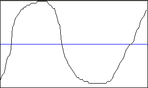
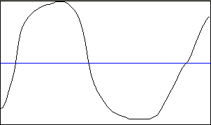

mSmoothSignals
Сглаживание сигналов в строках матрицы
Объявление функции
procedure mSmoothSignals(Ws: TWorkspace; SourAr, DestAr: string;
Iter: Integer);
Назначение
Процедура выполняет сглаживание сигналов в строках матрицы. SourAr - массив исходных сигналов. DestAr - массив, полученный после сглаживания. Iter - количество циклов сглаживания (чем больше это число, тем более гладким становится сигнал, постепенно он выраждается в прямую линию). Ws - ссылка на рабочую область, содержащую входные массивы.
Примеры
Пусть имеется некоторый несглаженный сигнал А, представленный на рисунке ниже

Выполним 30 циклов сглаживания:
mSmoothSignals(Base, 'A', 'A', 30);
В результате получим сглаженный сигнал, графическое изображение которого представлено на рисунке ниже:

Количество циклов сглаживания зависит от требований конкретной задачи.